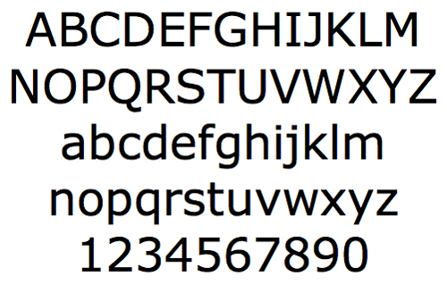
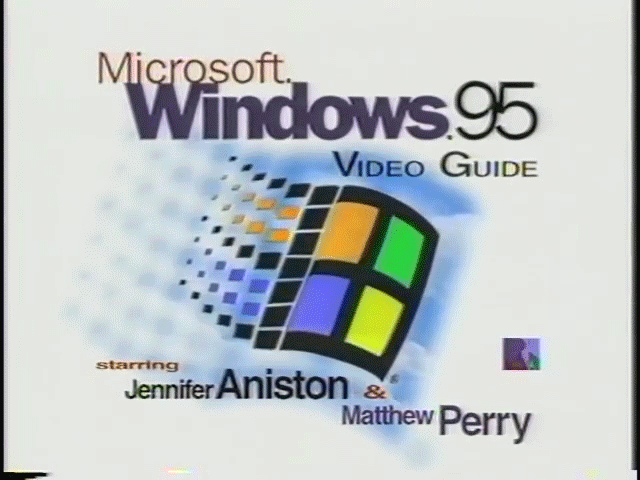

 is a humanist sans-serif typeface designed by
for , with hand-hinting done
by , then at Monotype. Demand for such
a typeface was recognized by of Microsoft's
typography group. The name "Verdana" is based on
verdant , and Ana (the name of Howlett's
eldest daughter).
Bearing similarities to humanist sans-serif
typefaces such as
Frutiger,Verdana was designed to be readable at
small sizes on
the low-resolution computer screens of the period.
The
lack of serifs,
large x-height,
wide proportions,
loose
letter-spacing,
large counters, and emphasized distinctions
between similarly-shaped characters are chosen to increase legibility
for body text. The bold weight is thicker than would be normal
with fonts for print use, a decision made to suit the limitations
of onscreen display. According to a study of online fonts by the
Software Usability and Research Laboratory at
Wichita State University,
participants preferred Verdana to be the best overall font choice and
it was also perceived as being among the most legible fonts.